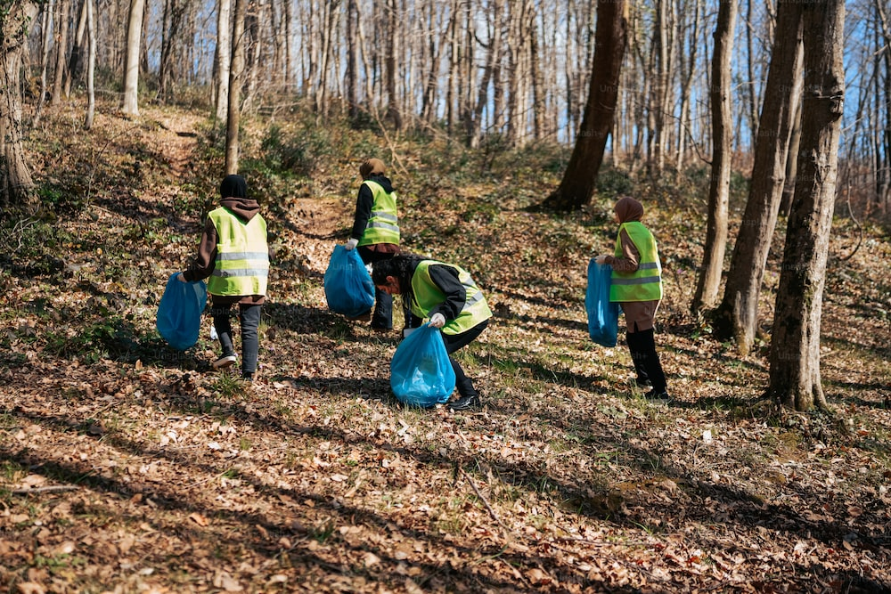

Join Organizations to Help Clean the Earth:
Join our many organizations that help make actual change when it comes to the cleaning of our oceans, forest, highways, etc.
What makes Waste-Watt Solution Sponsored Organizations Better than other Organizations?
Waste-Watt Solutions sees the complete process of leading groups to collect trash alongside roads/highways, and inside oceans/forest. After the trash has been "harvested", our teams will either deliver the trash to our waste facilities themselves in large loads or conduct a point of contact with our garbage trucks. Instead of the trash ending up in a landfill like many other organizations send there harvested trash to, our waste to energy facilities will turn the trash into useable electricity for the surrounding cities and towns.